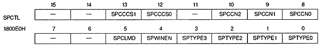

WxLWE | Processing |
0 | Do not change normal window to line window |
1 | Make normal window line window |
W0LWTA18 ~ W0LWTA16 | 1800D8H | bits 2-0 | for W0 |
W0LWTA15 to W0LWTA1 | 1800DAH | bits 15 to 1 | for W0 |
W1LWTA18 to W1LWTA16 | 1800DCH | bits 2 to 0 | for W1 |
W1LWTA15 to W1LWTA1 | 1800DEH | bits 15 to 1 | for W1 |

Sprite color calculation condition bit : Sprite color calculation condition bit
SPCCCS1 | SPCCCS0 | Article |
0 | 0 | (priority number) ≤ (color (Operation condition number) only |
0 | 1 | (Priority number) = (Color (Operation condition number) only |
1 | 0 | (priority number) ≥ (color (Operation condition number) only |
1 | 1 | The most significant bit of the color data is Only when 1 |